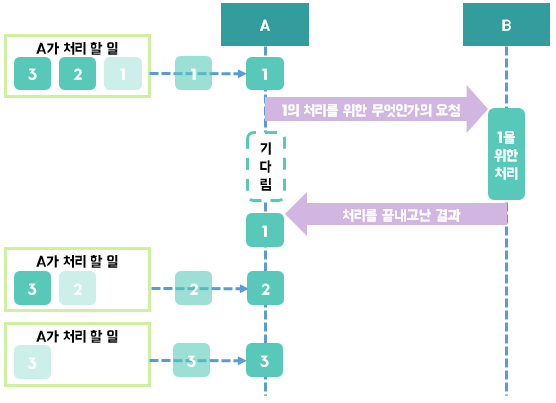

동기(Synchronous)
현실에서 동기는 동시에 일어난다는 뜻을 가지고 있거나 같게 맞춘다 라는 뜻을 가지고 있다.(필자는 그러한 뜻으로 사용한다. 핸드폰 주소록 동기화 등등)
하지만 컴퓨터에게 동기란 현실에서의 동기와 약간 다르다. 컴퓨터에서 동기란 자신이 하던일을 누군가에게 위임하고 그 일에 대한 처리가 끝날 때 까지 기다리고 있는 것이다. 이해가 안될수 있으니 그림을 보자.

- 일단 상황을 설명하겠다. 주인공은 A이다.(동기 비동기는 단순히 Thread에서만 사용되는게 아니라서 그냥 A,B로만 표현하였다.) A가 처리해야할 일이 1,2,3이 있다. 이 중에서 1은 처리하던 도중 B에게 위임하여 처리해야하는 부분이 존재한다.
- 먼저 A는 1을 처리한다. 하지만 중간에 자신이 처리할 수 없거나 다른 이유로 인해 1의 중간 처리 과정을 B에게 위임한다.
- 1의 처리를 요청받은 B는 1의 처리를 하기 시작한다. 이때 A는 B가 처리 결과를 내어줄 때까지 다른작업은 하지 않고 기다린다.
- B에서 처리가 끝난 결과를 A에게 가져다 주면 A는 1의 나머지 처리를 시작하고 1의 처리를 완전히 끝낸다.
- 1이 끝났으니 2를 시작하고 2가 끝나면 3을 시작한다.
딱 보아도 비효율적이다. 남에게 다른 일을 위임했으면 자신은 다른 일을 시작하면 되는 것이 아닌가? 하지만 동기 작업은 그렇지가 않다. 구글링을 해보면 동기에 대해서 이렇게 설명을 해놓은 블로그들이 조금 있다. '요청과 그 결과가 동시에 일어난다는 약속' 이라고 말이다. 하지만 나는 개인적으로 저말은 약간 이상하다고 생각한다. 위임한 일이 오래걸린 후에 받으면 '동시에' 라는 말은 맞지 않기 때문이다. 하지만 그렇다고 뭔가 딱 떠오르는 설명 문구는 없다.... 췌체...
동기의 핵심만 기억하자. [요청하고 기다린다. 기다리는 동안 다른 일은 할 수 없다.]
이러한 동기의 장점은 설계가 간단하고 직관적이라는 점을 들을 수 있다. 하지만 단점은 계속 말하는 대로 결과가 올 때까지 다른일을 하지 못한다는 것이다.